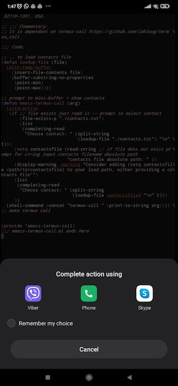

emacs-outlook-compli-mode.el
This Emacs major mode allows users to send emails through Microsoft Outlook by utilising simple osa-scripting (MacOs only) and you need the Outlook application therefore. It eliminates the need for using fake email client IDs, making it ideal for those who wish to maintain compliance with organisation regulations. With this mode, users can automate the process of composing and sending emails from within Emacs.
Note: Unfortunately I don´t maintain the package anymore as I don´t have time, as well as a solid reason as I have switched solely to debian.
Synerg(e)ia - Networked Remote Live Coding

- Synerg(e)ia (Συνέργεια) is an experimental project for Networked Collaborative live coding
- Synergia is a Raspberry pi SSH and OscGroups server located in Greece
- Synergia based on tmux collaborative editing, Emacs server/clients and SuperCollider
- Synergeia was developed together with Vasilis Agiomyrgianakis.
emacs-termux-call.el
Make a telephony call in Emacs running on an Android mobile phone using Termux, with a prompt to select a contact from your contacts list. The actual call is handled by the native Android functionality and Emacs is calling Termux:API.
notmuch-sync.el
This is part of my personal emacs-notmuch configuration for fetching and pushing from and to my Gmail account. This is a configuration for effortless syncing between notmuch and lieer using a simple elisp function.
It nerved me a lot that every time I wanted to fetch new email using lieer I had to leave emacs as I do not use shell within emacs and then run “gmi sync”. So, I wrote this.
Note: I am no longer using the no-output-shell-run to call the entire command pipeline. Now I am using a pre-new hook under .notmuch/hooks and I only need to call notmuch new to index new messages. Keeping it in a hook I can maitain all my Notmuch settings in one place. Nevertheless, shell-command pipeline call from within Emacs can still be used.